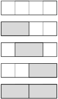

Subsection
Let’s imagine that you have a rectangular grid of blank spaces. How many ways can you tile that grid using either square tiles or two-square-wide dominoes?
We will define an \(n\)-board to be a rectangular grid of \(n\) spaces.
For example, here are all of the possible tilings for a 4-board. We can do it using four squares, one domino followed by two squares, one square one domino and one square, two squares followed by a domino, or two dominoes In total there are five ways to do this:

To tile a 3-board, it’s necessarily fewer. We can do it with three squares, one square and a domino, or one domino followed by a square. In total there are three ways to do it:
Example 5.4.1.
In how many ways can you tile a 5-board?
Solution.
Start by observing that a 5-board is just a 4-board with one extra space. How many ways are there to tile this? There are 5 ways to tile a 4-board and all we’re doing is adding an extra square. That means this configuration is the same as the number of ways to tile a 4-board, which we found above to be 5, multiplied by the 1 way to add a square: \(5\cdot 1 = 5\text{.}\)
But a 5-board is also a 3-board with an extra two spaces at the end. How many ways can we tile this? This is the same as the number of ways to tile a 3-board because we just add a domino at the end. If we added a square, it would no longer be a 3-board, it’d become a 4-board we counted above. Therefore we take the number of ways to tile a 3-board, multiplied by the 1 way to add a domino: \(3 \cdot 1 = 3\)
These two subdivisions are mutually exclusive (if we added a square to the 3-board, that’s turned it into the 4-board, which was already counted above). So we can conclude the number of ways to tile a 5-board is 5+3 = 8.
Observe that the number of ways to tile the board is defined recursively in terms of the two previous boards. In fact, since there’s only one way to a tile a 1-board and 1 ways to tile a 0-board (you don’t tile it at all), we can observe that the tilings follow a very familiar recursion:
Theorem 5.4.2.
Let \(f_n\) denote the number of tilings for an \(n\)-board. Then \(f_0=1\) (there is one way to tile a 0 board), and \(f_1=1\text{,}\) and for \(n \ge 2\)
\begin{equation*}
f_{n+1} = f_{n} + f_{n-1}
\end{equation*}
Proof.
In an \(n+1\)-board, there are \(f_n\) ways to tile the first \(n\) tiles followed by one square, and there are \(f_{n-1}\) to tile the first \(n-1\) tiles, followed by a domino. These tilings are disjoint events, and thus \(f_{n+1} = f_{n} + f_{n-1}\text{.}\)
Corollary 5.4.3.
Let \(F_n\) by the \(n\)th Fibonacci number. Then \(f_n = F_{n+1}\) (where we’ll make the notational convention that \(f_{-1}=0\) so our indices can match).
The number of ways to tile an \(n\)-board is a Fibonacci number! This means that anything we did with Fibonacci numbers can now be considered as tiling questions. Let’s put this to use to verify some Fibonacci identities using combinatorial proof. When we write condition on \(m\) we mean to consider “breaking” the board at tile \(m\) and count the separate pieces.
Example 5.4.4.
For \(n\ge 0,\, f_0 + f_1 + f_2 + \dots + f_n = f_{n+2} - 1\text{.}\)
Hint.
Question: “How many tilings of an \(n+2\)-board use at least one domino?” Condition on the location of the last domino.
Video / Answer.
Example 5.4.5.
For \(n\ge 0,\, f_0 + f_2 + f_4 + \dots + f_{2n} = f_{2n+1}\text{.}\)
Hint.
Condition on the location of the last square.
We say that a tiling of an \(n\)-board is breakable at cell \(k\), if the tiling can be decomposed into two tilings, one covering cells 1 through \(k\text{,}\) the other \(k+1\) through \(n\text{.}\) It is said to be unbreakable at \(k\) otherwise.
Example 5.4.6.
For \(m, n \ge 0,\, f_{m+n} = f_m f_n + f_{m-1}f_{n-1}\text{.}\)
Hint.
Condition on the breakability at cell \(m\text{.}\)
Video / Answer.
Example 5.4.7.
For \(n \ge 0\text{:}\)
\begin{equation*}
\sum_{i=0}^n \binom{n-i}{i} = f_n\text{.}
\end{equation*}
Note that we’ll define \(\binom{n}{k} = 0\) if \(n \lt k\text{.}\) This is reasonable since, for example, if you want to choose 3 objects from a set of 1 object, there are no ways to do it: i.e. \(\binom{1}{3} = 0\text{.}\)
Hint.
Condition on the number of dominoes.
Solution.
Question: “How many tilings of an \(n\)-board exist?”
Answer 1: There are \(f_n\) tilings.
Answer 2: Condition on the number of dominoes. If there are no dominoes, then from \(n\) cells, we have 0 choices for where to put the domino: \(\binom{n}{0}\text{.}\) For 1 domino, we will be using a total of \(n-2\) squares and domino which will span the remaining two locations. That means that we are using a total of \(n-1\) tiles, and so we have \(\binom{n-1}{1}\) possibilities.
For the case where we are using \(i\) dominoes, with \(0\le i \le n/2\text{,}\) we will be using \(n-2i\) squares, or a total of \(n-2i + i = n-i\) tiles. To choose where to place the \(i\) dominoes, we’ll have \(\binom{n-i}{i}\) ways to do this.
Thus, for \(n\ge 0\text{,}\) there are a total of \(\binom{n}{0} + \binom{n-1}{1} + \binom{n-2}{2} + \dots + \binom{n-n}{n}\) tilings of an \(n\) board. Since both answers count the same object, we conclude that \(\sum_{i=0}^n \binom{n-i}{i} = f_n\text{.}\)